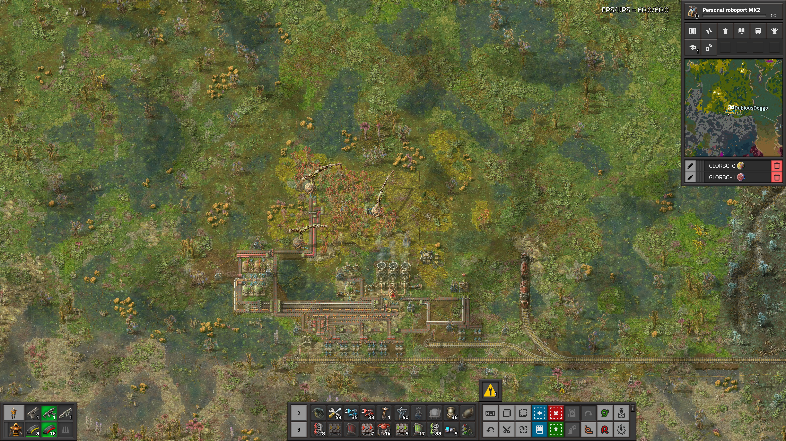
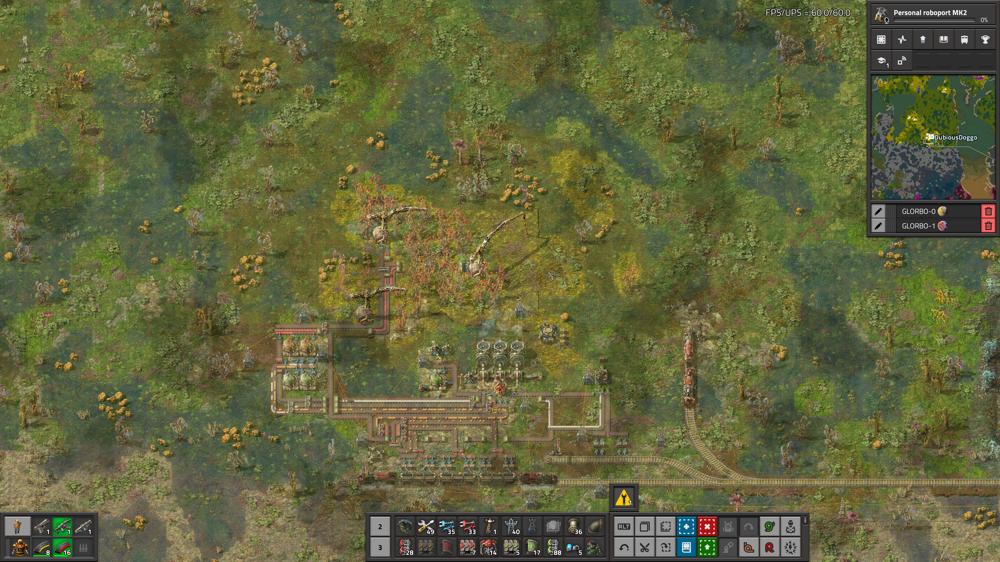
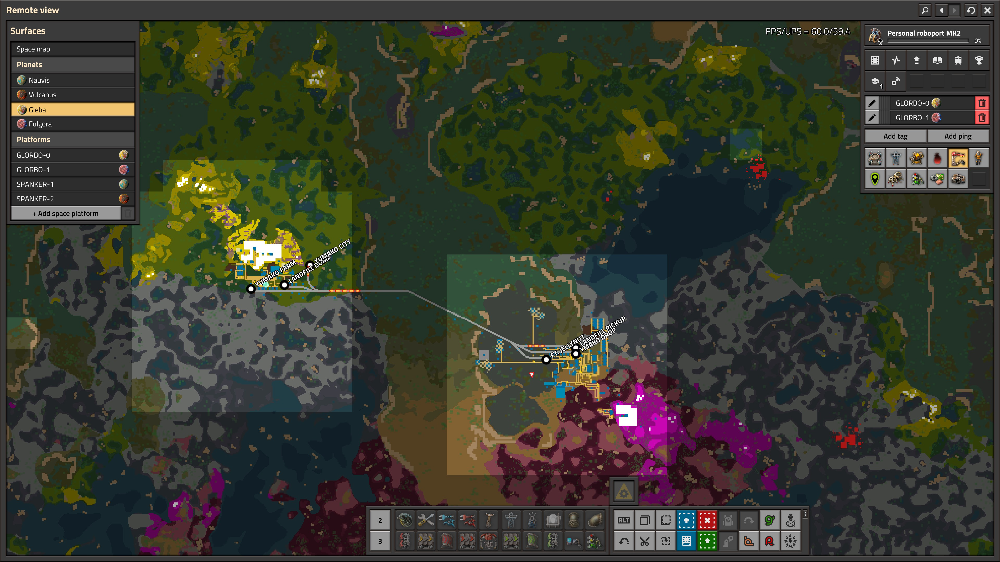
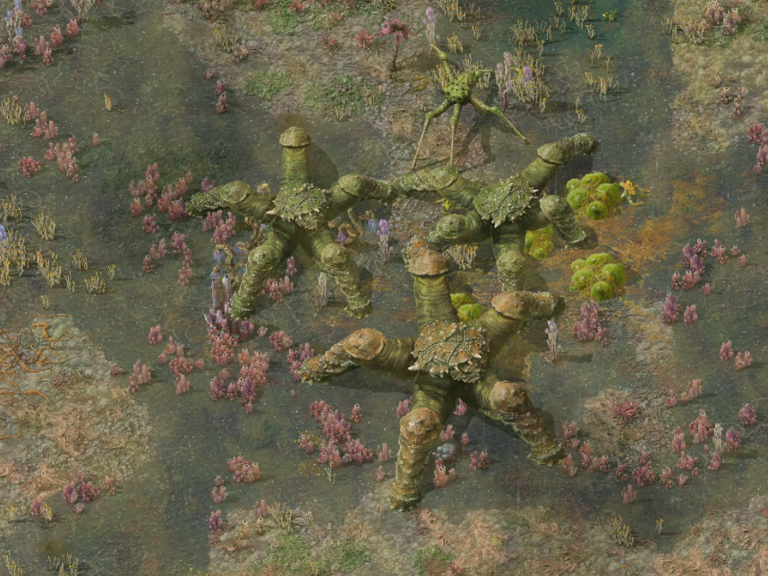

Dubious Doggo
a smattering of literary works
Ramblings
5.26.2025
So, here we are;
swirling around this great big soup.
the soup of the universe; universe soup.
The date is 5.26.12025, A.D.
A lot has changed in the last 10000 years.
by my estimate, an exponential amount of things.
I work in the coal mines of "Earth 2.0", to use a 2000's-ism.
tonight when I got off my shift I went up on over to BigHill for a dusting,
got my suit all nice and clean. hacked out a lung too in their clean air
box before smoking a bowl to clear my head — guess some things never change.
5/27/25
=== FACTORY LOG ===
BEGIN REPORT FROM GLEBA
Yumako production is going well. we have automated production of
artificial Yumako soil, greatly expanding the farmable area. --------
The construction robots sent from the previous NAVUIS shipment are being
used to sod the Yumako marshland and construct addtional farming towers.
A second rail station has been constructed to transport landfill
from FT. JELLYNUT to YUMAKO CITY. This station, along with a new
personnel tram, now share the rail line linking the two loctions.
By reccomendation of CPE a second rail line should be constructed
if the yeild time exceeds 30 seconds, to minimize Yumak mash spoilage
in transit to FT. JELLYNUT.
I've attached some aerial photographs of YUMAKO CITY that we took while
scoping out the location of the new passenger rail station, and a transit
map with the proposed locations.
END REPORT
BEGIN ATTACHMENTS



END ATTACHMENTS
END TRANSMISSION
5/29/25
=== FACTORY LOG ===
BEGIN REPORT FROM GLEBA
An addtional rail stop has been constructed in YUMAKO CITY, linking
it directly to the Jellynut farm in FT. JELLYNUT. Jellynut processing
has begun on site. Due to the relative stability of the unprocessed nut,
as compared to the Yumako mash and the processed nut jelly, in-transit
spoilage has been drasticlly reduced.
The combined freshness of both the Yumako mash and nut Jelly has
resulted in an approximate 50% increase in the freshness of the resulting
products, such as bioflux. As such, by reccomendation of CPE, all future
biological processing is to take place at YUMAKO CITY, with non-spoilable end
products possibly being shipped back to FT. JELLYNUT for further processing.
As part of the agreement between YUMAKO CITY and FT. JELLYNUT, all
Jellynut seeds from processing at the YUMAKO site are shipped back to
FT. JELLYNUT for replanting.
END TRANSMISSION
6-29-25
FACTORY LOG
A REPORT FROM GLEBA
We wish to infrom you that plasic and sulfer produciton has begun.
Due to the high concentartion of sulfr gas, and tovccx--- toxic
chemicals, YUMAKO CITY is UNINHABITABLE. perfecyly safe to inhabit.
see attached for the fruits of the labor.
THE ATTACHMENTS IN QUESTION:
 END ATTACHNEMTS
REPORT FROM FT. JELLYNUT.
>>>>> A REQUEST HAS BEEN SUBMITTED TO NAVIIUS SUPPLY FOR
CANNON SHELL x 100.
Due to the increase in demand for Jellynut from YUMAKO CITY, Jellynut
production has increased. The resulting increase in released spores
from the Jellynut farming process has been significant. Based on our
estimates the spore cloud has not yet reached the local fauna; it is
however becomming dangerously close to the nearest raft of pentapod.
We are currently lacking in defence capability, and would be unable to
subdue the pentapod should they become aware of the farm's location.
Local production of cannon shells had been prevented thus far by the
lack of coal on the surface of GLEBA. Further research will need to be
conducted on methods of coal synthesis in order to bring local explosives
production online.
As such, we request armaments imminately.
-- CPE
END TRANSMISSION
END ATTACHNEMTS
REPORT FROM FT. JELLYNUT.
>>>>> A REQUEST HAS BEEN SUBMITTED TO NAVIIUS SUPPLY FOR
CANNON SHELL x 100.
Due to the increase in demand for Jellynut from YUMAKO CITY, Jellynut
production has increased. The resulting increase in released spores
from the Jellynut farming process has been significant. Based on our
estimates the spore cloud has not yet reached the local fauna; it is
however becomming dangerously close to the nearest raft of pentapod.
We are currently lacking in defence capability, and would be unable to
subdue the pentapod should they become aware of the farm's location.
Local production of cannon shells had been prevented thus far by the
lack of coal on the surface of GLEBA. Further research will need to be
conducted on methods of coal synthesis in order to bring local explosives
production online.
As such, we request armaments imminately.
-- CPE
END TRANSMISSION
7/2/25
REPORT FROM GLEBA
The pentapod colony nearest to FT. JELLYNUT has been terminated. The
cannon shells provided from NAVIUS proved most useful in this endevour.
Permanent autonomous defenses will need to be constructed before GLEBA
can be left without supervision.
Work on spacefligt from GLEBA continues. Production of engine units at
FT. JELLYNUT has begun, and bio-lubricant processing has begun at YUMAKO
CITY. Due to the iron demand of the engine units, iron smelting facilities
have been expanded. However, iron production is now bottlenecked by iron
bacteria cultivation, in part due to lack of fresh nutrients on site at
FT. JELLYNUT. As such, a new bacteria cultivation center is being constructed
in YUMAKO CITY.
Two new rail stations are under construction at YUMAKO CITY, one for export
of iron ore and bacteria, and one for lubricant in preparation for electric
engine production at FT. JELLYNUT.
END TRANSMISSION
BEGIN ATTACHMENTS

Reconnaissance photograph of the local pentapod colony
 Bio lubricant facility
END ATTACHMENTS
Bio lubricant facility
END ATTACHMENTS